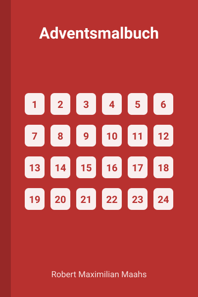
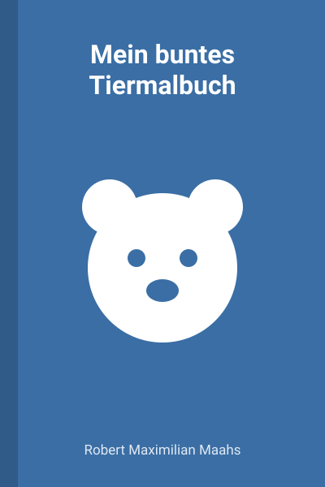
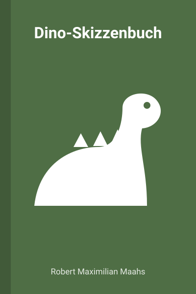
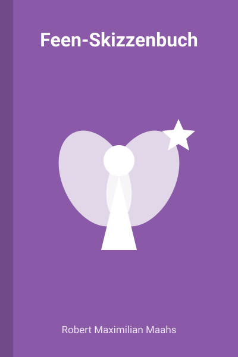
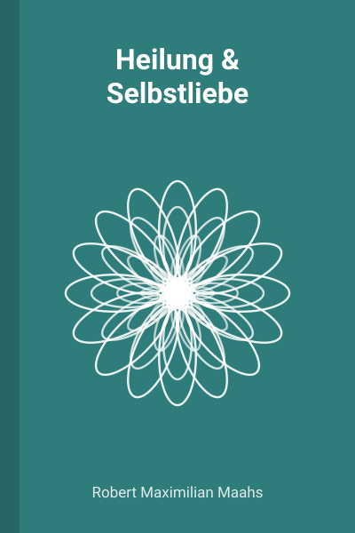
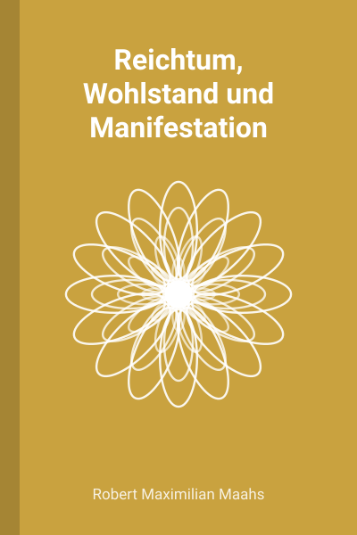

Kinder · Taschenbuch
Adventsmalbuch
Ein Adventskalender zum Ausmalen für Kinder mit 24 Bildern und Zahlen
24 Bilder zum Ausmalen, eins für jeden Tag bis Weihnachten. Mit großen Zahlen, damit Kinder die Tage selbst finden.
Bücher
Von Robert Maximilian Maahs: Malbücher und Skizzenbücher für Kinder ab 4 Jahren und Mandala-Malbücher mit Affirmationen für Erwachsene. Alle als Taschenbuch bei Amazon.
Für Kinder
Geschenkideen für Kinder ab 4 Jahren: zum Advent, für den Kindergarten oder für lange Autofahrten.

Kinder · Taschenbuch
Ein Adventskalender zum Ausmalen für Kinder mit 24 Bildern und Zahlen
24 Bilder zum Ausmalen, eins für jeden Tag bis Weihnachten. Mit großen Zahlen, damit Kinder die Tage selbst finden.

Kinder · Taschenbuch
30 Tiere in 10 Sprachen
30 Tiere zum Ausmalen. Zu jedem Tier steht der Name in 10 Sprachen. Malen und nebenbei Wörter lernen.

Kinder · Taschenbuch
100 Seiten zum Zeichnen für Kinder ab 4 Jahren
Blanko-Skizzenbuch mit lustigem Dinosaurier auf dem Umschlag. 100 leere Seiten für eigene Bilder.

Kinder · Taschenbuch
Blanko-Zeichenbuch für Kinder ab 4 Jahren
Leere Seiten zum Zeichnen, begleitet von einer kleinen Fee am Seitenrand.
Für Erwachsene
Ausmalen zum Entspannen. Jedes Mandala hat einen Satz, der dich durch den Tag begleitet.

Erwachsene · Taschenbuch
Mandalas für ein höheres Selbst – Mandalas und Affirmationen zum Ausmalen
Mandalas zum Ausmalen, jeweils mit einer Affirmation. Für ruhige Minuten und zum Abschalten.

Erwachsene · Taschenbuch
Mandalas und Affirmationen zum Ausmalen
Mandalas mit Affirmationen rund um Fülle und Wohlstand. Ausmalen als kleine tägliche Auszeit.
* Partnerlink: Als Amazon-Partner verdienen wir an qualifizierten Verkäufen. Für dich ändert sich der Preis nicht. Den aktuellen Preis siehst du bei Amazon.